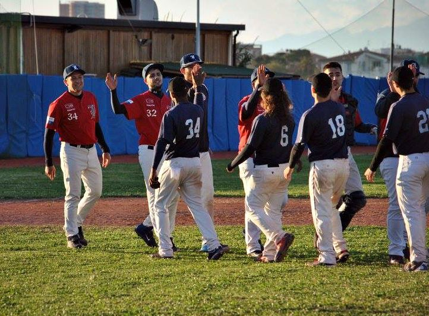
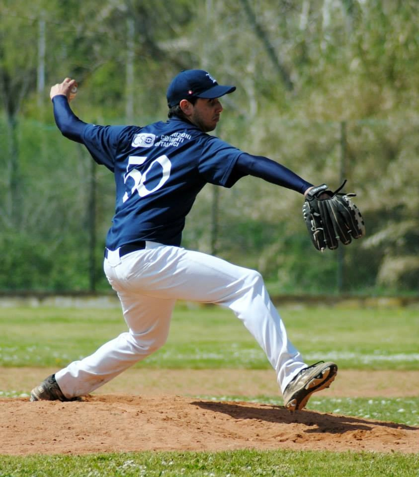

E’ un risveglio dolce-amaro quello dei Lancers questa mattina, da un lato i lastrigiani festeggiano la prima storica vittoria nel campionato di Serie B contro un avversario più esperto come il Livorno, dall’altro c’è la consapevolezza che la doppietta era ampiamente alla nostra portata.
Gara 1 infatti è terminata con il punteggio di 12-11 al primo extrainning in favore dei locali grazie alla valida di Carlesi che porta a punto il compagno piazzato in seconda grazie alla regola del tie break.
La partita è stata molto combattuta grazie a buone difese e ai due partenti dell’incontro, Spignese per Livorno e Vannini per i Lancers (ex compagni di squadra a Sesto Fiorentino), il risultato alla fine della sesta ripresa era fermo sullo 0 a 0.
L’inning successivo sblocca la partita, iniziano i Lancieri che segnano 6 punti grazie alla base ball di Parrini e alle valide di Ramirez e Albano (due RBI ciascuno) dopo che i compagni avevano riempito le basi.
Non tarda ad arrivare la risposta del Livorno che sul rilievo dei Lancers Lapini colpiscono alcune valide fortunate e la difesa lastrigiana si fa meno attenta; subentra Vannuzzi con qualche difficoltà iniziale ma riesce comunque a chiudere il big inning labronico, adesso il punteggio recita 9-6 per Livorno.
All’ottava ripresa entrambe le squadre segnano due punti ciascuno, mentre nell’ultimo attacco i Lancieri di Gentilini e Ciappi conquistano tre punti fondamentali e difendono l’ultimo attacco regolamentare dei livornesi in maniera impeccabili, si va a gli extra inning.
Purtroppo il tie break non sorride ai lastrigiani che non riescono a portare punti utili alla causa, il Livorno invece azzecca subito il contatto giusto e può festeggiare una vittoria molto sofferta.
Ottima partita di Vannini che per 6 inning completi ammutolisce, aiutato da un’ottima difesa, le mazze avversarie e ottimo Baratella con 2 su 3 in battuta e media 1000 arrivi in base su 5 turni.
Formazione partente Gara 1: Vannini P; Becattini C; Diaz 1B; Ramirez 2B; Parrini 3B, Degl’Innocenti SS; Baratella LF; Geri CF; Graceffa RF, Albano DH.

Una sconfitta del genere poteva certamente destabilizzare sia fisicamente che mentalmente la squadra che invece risponde con grinta e determinazione al primo attacco di gara 2, arrivano ben 5 punti sul partente labronico Nencini con i singoli di Ramirez, Albano e Parrini.
I Lancers si affidano all’esperienza di Ciappi, bene i primi due inning chiusi senza subire alcun punto.
Nella terza ripresa arriva un altro punto dell’attacco bianco/blu e i primi tre punti del Livorno che porta il parziale sul 3 a 6 in favore degli ospiti.
Inizia un botta e risposta che dura quattro riprese, Livorno segna 3 punti al quinto ed i Lancers segnano 3 punti al quarto e 2 al settimo inning di gioco per il momentaneo 6-11.
Si segnalano le belle battute di Becattini (bastonata in fondo al campo), Pistol, Degl’Innocenti e Baratella.
La buona partita di Ciappi si concluda con 6 inning completi lanciati, pochi i punti a proprio carico per colpa di alcune disattenzioni difensive, sale come rilievo il giovane Simone Apata.
Le mazze del lineup livornese si spengono sulle palle veloce del lanciatore mancino, la settima e l’ottava ripresa vengono chiuse in velocità.
Nel nono inning si sente un po’ la tensione tra le fila dei Lancers, il Livorno accorcia con un paio di buone battute valide e segna due punti, Apata però resta concentrato e con un out e due uomini in base assiste per due volte in prima base chiudendo in maniera egregia la sua prestazione.
E’ storia! Prima vittoria in Serie B…ma come si dice, la fame vien mangiando!
Formazione partente Gara 2: Ciappi P; Becattini C; Diaz 1B; Pistol 2B; Parrini 3B, Degl’Innocenti SS; Nerbini LF; Geri CF; Ramirez RF, Albano DH.